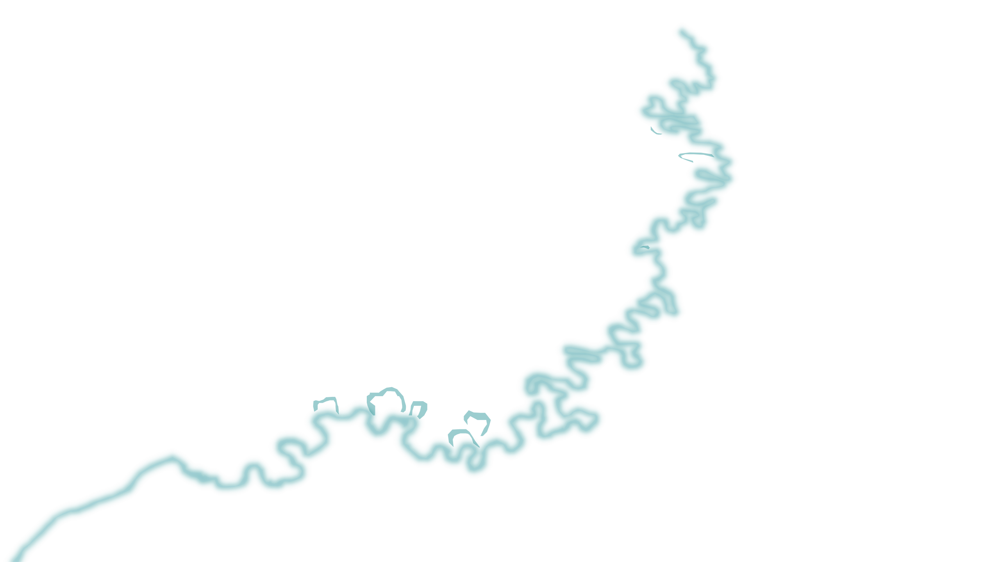

Robles
Las familias llegaron al territorio en el siglo XIX, tras la abolición de la esclavitud. Con el tiempo construyeron un modelo de vida basado en la finca diversificada: plátano, yuca, maíz, chontaduro y plantas medicinales convivían en el mismo predio con el monte y el río.
Desde los años noventa, la expansión del monocultivo de caña de azúcar ha transformado históricamente el paisaje del territorio.
1961
Cobertura de consejos comunitarios
2024
Cobertura de consejos comunitarios
1961
Humedales
2024
Humedales
Geografías negras es una plataforma cartográfica participativa que documenta las prácticas territoriales de las comunidades afrodescendientes de Jamundí, en el sur del Valle del Cauca. El proyecto nace de la necesidad de visibilizar y defender los saberes, los usos del agua y las formas de vida de la finca tradicional frente al avance del monocultivo de caña de azúcar.
A través de encuestas comunitarias, talleres participativos y trabajo cartográfico colaborativo, el equipo construyó junto con los consejos un atlas territorial que recoge variables de tenencia de la tierra, biodiversidad productiva, fuentes de agua y presión territorial, entre otras dimensiones críticas para la autonomía comunitaria.
La plataforma es a la vez un instrumento de contramapeo, una herramienta de incidencia política y un archivo vivo de la memoria territorial afrodescendiente en Jamundí, ejecutada en alianza entre Queen's University, la Universidad del Valle y la Universidad Autónoma de Occidente.
Seis consejos comunitarios afrodescendientes de Jamundí participaron en la construcción colectiva de esta plataforma, aportando su conocimiento territorial, su historia y su voz a través de talleres, encuestas y relatos.
Este taller se centró en visibilizar y documentar las prácticas territoriales de los consejos participantes como parte del proceso de contramapeo y construcción de soberanía geográfica.
Alfredo Lucumí León, de Chagres, compartió su vínculo ancestral con el humedal La Guinea, sustento de la región durante generaciones y espacio de recreación donde convergían Robles, Villa Paz, Quinamayó, Timba y Chagres.
Cartografía participativa del territorio: los asistentes identificaron y nombraron lugares significativos, fuentes de agua comunitaria y zonas de conflicto territorial no registradas en cartografía oficial.
La sesión evidenció la brecha entre los mapas oficiales y las territorialidades vividas, sentando las bases para el proceso de contramapeo comunitario.
Esta sección resume el proceso de sistematización realizado para identificar cómo el ordenamiento territorial ha sido pensado desde categorías técnicas, administrativas y sectoriales que muchas veces no logran nombrar la complejidad de los territorios afrodescendientes.
Contenido sobre normatividad específica para comunidades negras · próximamente
Contenido sobre ordenamiento territorial alrededor del agua · próximamente
Contenido sobre borrado de los cuerpos de agua · próximamente
Contenido sobre territorios sin reconocimiento · próximamente
Páginas y recursos web · próximamente
Metodologías · próximamente
Selecciona uno o varios consejos comunitarios de Jamundí y las capas que necesitas. Descarga tu mapa en el formato de tu preferencia para uso en SIG, análisis o presentaciones.